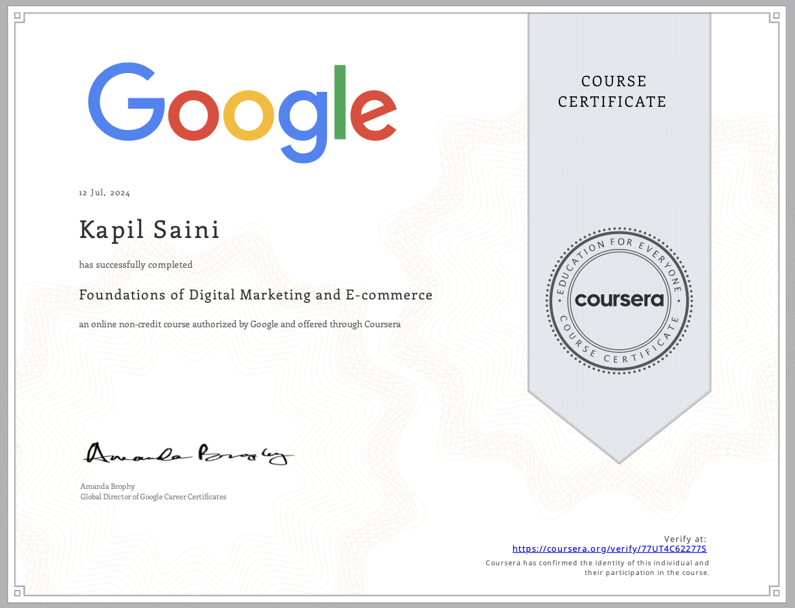

KAPIL SAINI
Passionate about marketing and continuous learning, with a strong ambition to excel in product and brand management
Work Experience Certificates
Wilshire Pharmaceuticals Pvt. Ltd
- Completed 6-week internship at Wilshire Pharmaceuticals Pvt. Ltd.
- Led project on Pharmacovigilance & Drug Safety Practices.
- Maintained excellent professional relationships and workplace conduct.
- Applied MBA knowledge to real-world pharma administration.
- Received formal certification for outstanding contribution.
O.H.M EXPORT
- Gained hands-on exposure to international trade operations, including export documentation, compliance procedures, and shipment coordination
- Conducted market research on potential overseas buyers and emerging markets to support business expansion strategies
- Assisted in product catalog management and coordinated with production teams to ensure timely dispatch of export orders
- nhanced negotiation and communication skills by interacting with clients, suppliers, and freight forwarders across different time zones
- Applied digital marketing tools to promote products in global markets, boosting brand visibility and generating new inquiries
Coursera Certificates

- Google-authorized Foundations of Digital Marketing & E-Commerce.
- Mastered SEO, PPC, and social media strategies.
- Endorsed by Google Career Certificates Director.
- Built expertise in e-commerce optimization and growth.
- Earned verifiable Coursera credential.
- Market Research & Consumer Insights – Understand customer needs, market trends, and competitors to position the product effectively.
- Brand Positioning & Messaging – Create a unique identity, value proposition, and consistent messaging across all channels
- Product Lifecycle Management – Plan, launch, grow, and manage products from inception to decline stage.
- Integrated Marketing Strategies – Coordinate pricing, promotion, distribution, and communication to strengthen brand presence
- Performance Tracking & Optimization – Monitor KPIs like sales, brand awareness, and customer loyalty, then adapt strategies for better results
- Completed data analytics for business course.
- Gained skills in interpreting marketing data.
- Used analytics to improve campaign ROI.
- Built proficiency with Google Analytics tools.
- Earned verified Coursera certification.
Social Media Analytics
- Grew LinkedIn followers by 85.7% in 151 days.
- Implemented targeted audience-building strategies.
- Analyzed growth trends for content optimization.
- Replicated high-performing strategies for continued expansion.
- Enhanced brand visibility and reach.
- Generated 1,012 impressions in 2 months.
- Reached 188 unique professionals.
- Maintained high engagement peaks.
- Optimized content strategy based on analytics.
- Strengthened brand positioning.
- Single comment reached 2,729 impressions.
- Sparked meaningful community discussions.
- Showcased thought leadership in niche topics.
- Used visual storytelling to enhance engagement.
- Built trust and personal branding.